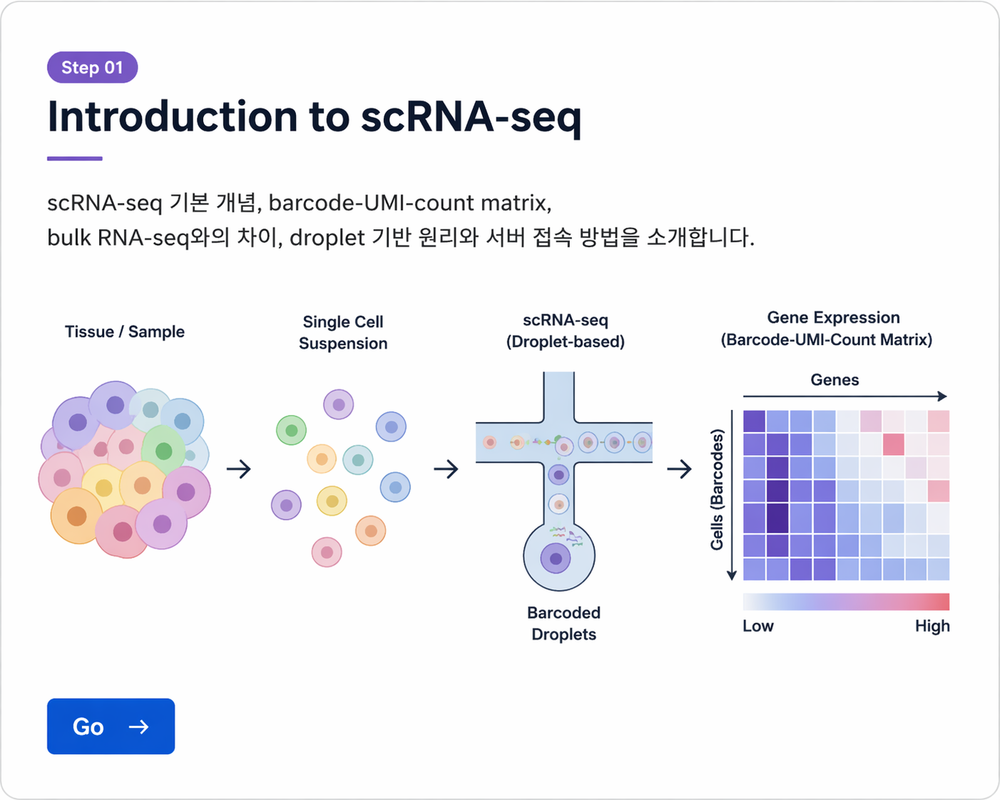
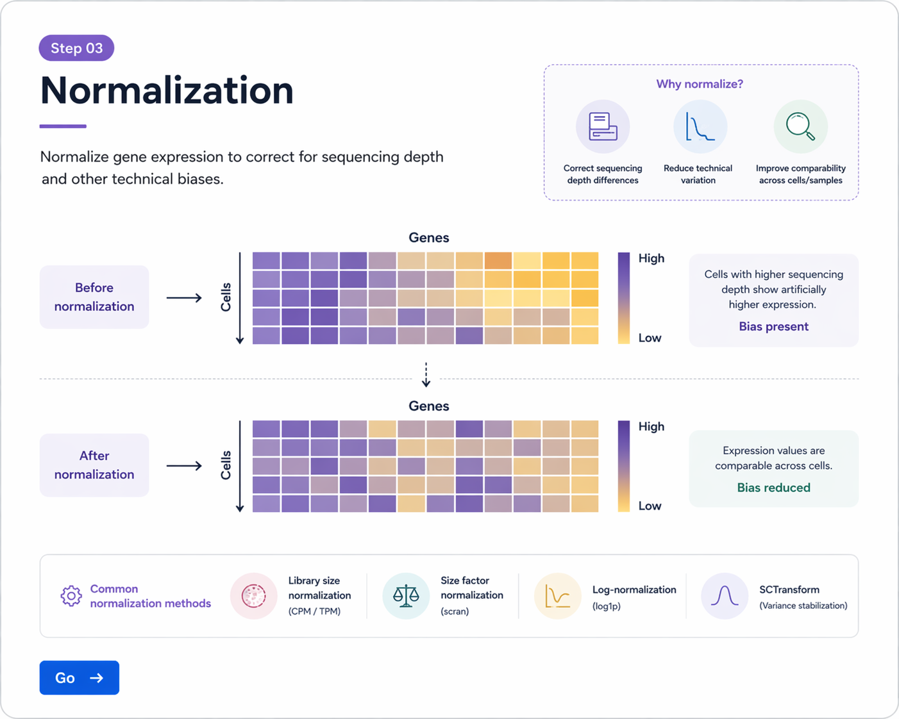

Single-cell RNA-seq Tutorial (Hands-on)
각 단계를 차례대로 클릭하여 실습을 진행하세요.

scRNA-seq 기본 개념, barcode·UMI·count matrix, bulk RNA-seq와의 차이, droplet 기반 원리와 서버 접속 방법을 소개합니다.
Go
nFeature_RNA, nCount_RNA, percent.mt를 이용한 품질관리와 저품질 세포 제거, doublet 개념을 학습합니다.
Go
NormalizeData, FindVariableFeatures, ScaleData를 이용한 정규화와 고변이 유전자 선택 과정을 실습합니다.
Go
여러 샘플 통합, batch effect 개념, Seurat integration과 Harmony 기반 보정의 개요를 다룹니다.
Go

marker gene 기반으로 immune, stromal, epithelial 등 세포 유형을 annotation하는 방법을 실습합니다.
Go

doublet detection, cell cycle scoring, CNV inference, pseudotime, cell-cell communication 등 고급 주제를 다룹니다.
Go